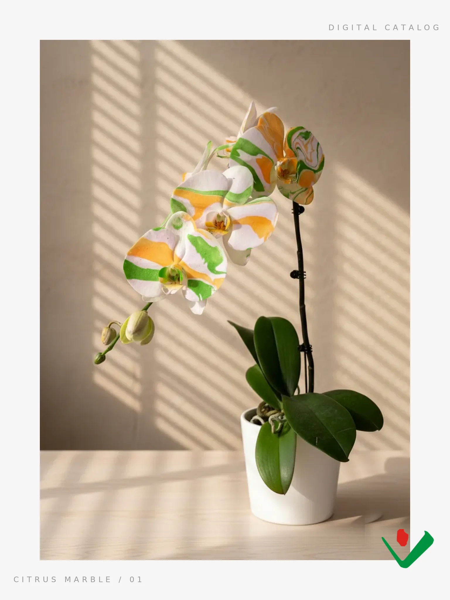

Nº 01
PATENT PENDING
Citrus Marble
Potted · 星空
Orange and green poured across white — the newest plant off the Constellation bench, grown and finished in-house.
Saffron & Sky
Contemporary Zen
Warm amber marbled through soft blue — a calm, sunlit statement.
Porcelain Indigo
Modern Botanical
Cobalt swirls on bright white, like brushed ink on porcelain.
Rose Jade
Artisan Botanical
Blush pink and jade green folded together, no two petals alike.
Chartreuse Mist
Botanical Minimalist
Pale lime drifting over cream — quiet, contemporary, refined.
Peach Sorbet
Pastel Minimalism
Soft peach and butter-yellow bleeding into blush pink — a warm, gentle marble finished in-house.
Aurora
Ethereal Botanical
Iridescent ribbons of mint, lilac and coral shifting across every petal — no two lit the same way.